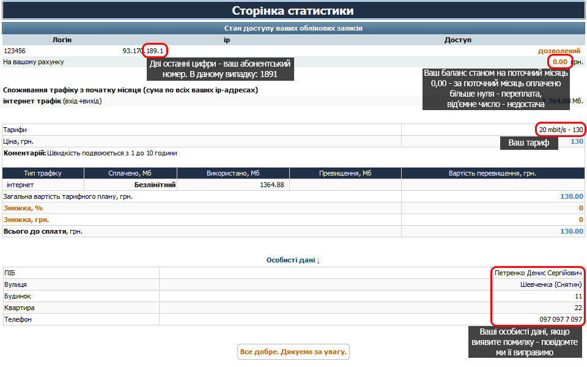

Як зайти в особистий кабінет при від'ємному балансі?
- Якщо у вас немає Wi-Fi маршрутизатора - авторизуйтеся за допомогою комп'ютера в нашій мережі;
- Якщо ви користуєтеся Wi-Fi маршрутизатором - він повинен бути включеним та авторизованим в нашій мережі.
Пристрій, з якого плануєте заходити в особистий кабінет, має бути підключеним до маршрутизатора за допомогою
кабелю або Wi-Fi;
- В браузері (Chrome, Mozilla, Internet Explorer, Opera тощо) зверху в адресному рядку повністю вручну написати
stat.prostir.if.ua далі натиснути клавішу Enter на клавіатурі, або Перейти на мобільному пристрої;
- Під час друку в адресному рядку браузер може запропонувати перехід на схожі сторінки. Не потрібно натискати на
дані пропозиції, оскільки вас перенаправить на пошукову систему. При від'ємному балансі доступ на пошукові
системи заблокований, тому браузер вам повідомить що неможливо відтворити дану сторінку;
- Якщо ви все зробили правильно - відкриється вікно авторизації з логотипом "Простір". Введіть логін та пароль
які ви отримали при підключенні. Якщо ви не пам'ятаєте логін чи пароль - зверніться в техпідтримку
і ми повідомимо вам цю інформацію.

 097 921 65 22
097 921 65 22 099 495 15 35
099 495 15 35